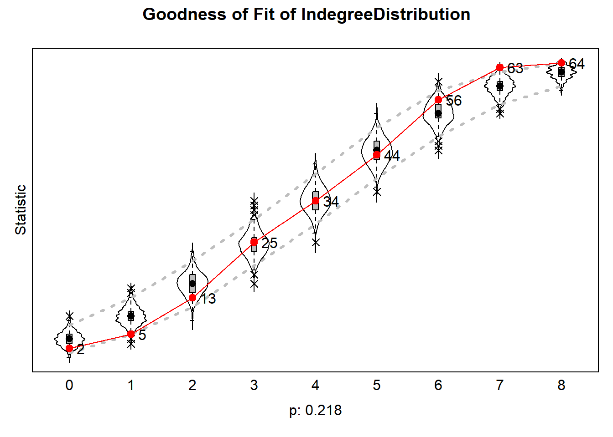

This website converted the following original .R scripts into .rmd files.
- RScriptSNADescriptives.R
- Rscript01DataFormat.R
- Rscript02SienaVariableFormat.R
- Rscript03SienaRunModel.R
- Rscript04SienaBehaviour.R
Please visit GitHub for the latest .R files.
Contact
Specific questions with respect to the .rmd files can be addressed to: Jochem Tolsma.
For questions on RSiena please visit the designated GitHub page.
Here, script are shown that can be used to present violin plots representing how well the simulations of our SIENA models capture the distribution of features of the dependent variable(s) (i.e., networks and ‘behavior’) that were not directly modeled, but for which a good fit between model and data is desirable.
Background reading: Lospinoso & Snijders (2019).
Background
The goal of GOF-testing is to ensure that our estimated SIENA model accurately represents the observed data of the dependent variable, based on so-called auxiliary statistics, such as the distribution of outdegrees, indegrees, reciprocity, triadic configurations, geodesic distances, behavior traits, edgewise similarity, etc. This list is not exhaustive and should be tailored to the specific research question.
The assessment of fit involves comparing observed network features to
their expected values in the estimated distribution of networks, derived
from a large number of simulations (saved when
returnDeps=TRUE in the siena07-call). If the
assessment reveals a poor fit, it becomes necessary to propose model
elaborations to improve the fit between the model and data.
Although one might possess theoretical notions about remediation, the complex nature of networks introduces a vast array of potential effects to consider (as shown by the large list of effects in the RSiena manual). In many instances, relying solely on theory and experience is insufficient to confidently propose the effects that ought to be incorporated for better model fit. Also, experimenting with various model specifications can be time-consuming.
RSiena provides a computationally efficient predictor
for assessing the fit if the model were to be extended by specific
additional effects. This estimator can be evaluated using only
ingredients calculated already for the method-of-moments estimation of
the restricted model (thus, testing an effect without estimating it, by
setting test=TRUE and fix=TRUE in the
includeEffects-call).
The results can be plotted which then produce violin plots, which present the distribution of the statistic as a combination of a box plot and a smooth approximation to the density (by a kernel density estimate), with the observed values superimposed.
The p-values for sienaGOF compare, in the space
of outcomes of the auxiliary statistic, the position of the observed
data to the cloud of points formed by the simulated data sets that
correspond to the estimated model. This comparison is with respect to
the ‘distance’ from the center of the cloud of points, where ‘distance’
is between quotation marks because it is the Mahalanobis distance, which
takes into account the correlations and different variances of the
components of the auxiliary statistic.
A very small value of p indicates poor fit. The customary value of p = 0.05 may be used as a threshold determining whether the fit is adequate, but this threshold is of even less importance here than it is in the case of regular hypothesis testing. Concluding, if p = 0, then with respect to the auxiliary statistic the fit is poor; it might be rather poor or extremely poor, and you do not know how extreme it is.
For more info, we refer to the article by Lospinoso & Snijders (2019) and the RSiena manual section 5.14.
application on van de Bunt data
First, download the data
download.file("https://www.stats.ox.ac.uk/~snijders/siena/vdBunt_data.zip",
destfile='./data/vdb.zip')
unzip('./data/vdb.zip', exdir='./data/')continue with loading the data files. And perform some wrangling.
vdb.w0 <- as.matrix(read.table("./data/VRND32T0.DAT"))
vdb.w1 <- as.matrix(read.table("./data/VRND32T1.DAT"))
vdb.w2 <- as.matrix(read.table("./data/VRND32T2.DAT"))
vdb.w3 <- as.matrix(read.table("./data/VRND32T3.DAT"))
vdb.w4 <- as.matrix(read.table("./data/VRND32T4.DAT"))
vdb.w5 <- as.matrix(read.table("./data/VRND32T5.DAT"))
vdb.w6 <- as.matrix(read.table("./data/VRND32T6.DAT"))
vdb.attr <- as.matrix(read.table("./data/VARS.DAT"))
# Take account of missing data codes 6 and 9:
vdb.w0[vdb.w0 %in% c(6,9)] <- NA
vdb.w1[vdb.w1 %in% c(6,9)] <- NA
vdb.w2[vdb.w2 %in% c(6,9)] <- NA
vdb.w3[vdb.w3 %in% c(6,9)] <- NA
vdb.w4[vdb.w4 %in% c(6,9)] <- NA
vdb.w5[vdb.w5 %in% c(6,9)] <- NA
vdb.w6[vdb.w6 %in% c(6,9)] <- NA
# Recode 4 (acquaintance) and 5 (difficult) to no tie
vdb.w0[vdb.w0 %in% c(4,5)] <- 0
vdb.w1[vdb.w1 %in% c(4,5)] <- 0
vdb.w2[vdb.w2 %in% c(4,5)] <- 0
vdb.w3[vdb.w3 %in% c(4,5)] <- 0
vdb.w4[vdb.w4 %in% c(4,5)] <- 0
vdb.w5[vdb.w5 %in% c(4,5)] <- 0
vdb.w6[vdb.w6 %in% c(4,5)] <- 0
# Use the "friendly relation" relation by recoding:
vdb.w0[vdb.w0 %in% c(1,2,3)] <- 1
vdb.w1[vdb.w1 %in% c(1,2,3)] <- 1
vdb.w2[vdb.w2 %in% c(1,2,3)] <- 1
vdb.w3[vdb.w3 %in% c(1,2,3)] <- 1
vdb.w4[vdb.w4 %in% c(1,2,3)] <- 1
vdb.w5[vdb.w5 %in% c(1,2,3)] <- 1
vdb.w6[vdb.w6 %in% c(1,2,3)] <- 1Construct an RSiena data object and algorithm
library(RSiena)
# Attributes:
sex <- coCovar(vdb.attr[,1])
program <- coCovar(vdb.attr[,2])
smoke <- coCovar(vdb.attr[,3])
# waves 2-3-4
friends234 <- sienaDependent(array(c(vdb.w2,vdb.w3,vdb.w4),
dim=c(32, 32, 3)), allowOnly=FALSE)
vdb.data234 <- sienaDataCreate(friends234,sex,program,smoke)
# Algorithm creation:
vdb.algo <- sienaAlgorithmCreate(projname = 'vdb_gof234', seed=123456)#> If you use this algorithm object, siena07 will create/use an output file vdb_gof234.txt .Now we define some functions from
sienaGOF-auxiliary.
#see here:
?'sienaGOF-auxiliary'
# The geodesic distribution is not available from within RSiena,
# and therefore is copied from the help page of sienaGOF-auxiliary:
# GeodesicDistribution calculates the distribution of non-directed
# geodesic distances; see ?sna::geodist
# The default for \code{levls} reflects the usual phenomenon
# that geodesic distances larger than 5
# do not differ appreciably with respect to interpretation.
# Note that the levels of the result are named;
# these names are used in the \code{plot} method.
GeodesicDistribution <- function (i, data, sims, period, groupName,
varName, levls=c(1:5,Inf), cumulative=TRUE, ...) {
x <- networkExtraction(i, data, sims, period, groupName, varName)
require(sna)
a <- sna::geodist(symmetrize(x))$gdist
if (cumulative)
{
gdi <- sapply(levls, function(i){ sum(a<=i) })
}
else
{
gdi <- sapply(levls, function(i){ sum(a==i) })
}
names(gdi) <- as.character(levls)
gdi
}
# The following function is taken from the help page for sienaTest
testall <- function(ans){
for (i in which(ans$test)){
sct <- score.Test(ans,i)
cat(ans$requestedEffects$effectName[i], '\n')
print(sct)}
invisible(score.Test(ans))
}Now, we can go to applying sienaGOF to the van de Bunt
data for waves 2, 3, 4.
We define a model to decide between three specification of transitivity. This forward model selection is not recommended in general; it is used here only to demonstrate the use of the sienaGOF function.
vdb.eff234 <- getEffects(vdb.data234)
vdb.eff234 <- includeEffects(vdb.eff234, transTrip, transTies, gwespFF,
test=TRUE, fix=TRUE)#> effectName include fix test initialValue parm
#> 1 transitive triplets TRUE TRUE TRUE 0 0
#> 2 transitive ties TRUE TRUE TRUE 0 0
#> 3 GWESP I -> K -> J (#) TRUE TRUE TRUE 0 69vdb.eff234#> effectName include fix test initialValue parm
#> 1 constant friends234 rate (period 1) TRUE FALSE FALSE 5.16295 0
#> 2 constant friends234 rate (period 2) TRUE FALSE FALSE 4.80941 0
#> 3 outdegree (density) TRUE FALSE FALSE -0.41980 0
#> 4 reciprocity TRUE FALSE FALSE 0.00000 0
#> 5 transitive triplets TRUE TRUE TRUE 0.00000 0
#> 6 transitive ties TRUE TRUE TRUE 0.00000 0
#> 7 GWESP I -> K -> J (#) TRUE TRUE TRUE 0.00000 69This model only estimates parameters for rates, outdegree, and reciprocity. The three transitivity parameters are tested by a score-type test, and not estimated. Note that these models are very inadequate from many points of view!
ans0 <- siena07(vdb.algo,
data=vdb.data234,
effects=vdb.eff234,
useCluster=TRUE, nbrNodes=10, initC=TRUE,
returnDeps=TRUE) #returnDeps to keep the networks generated, and attach it in ans$sims.
summary(ans0)#> Estimates, standard errors and convergence t-ratios
#>
#> Estimate Standard Convergence
#> Error t-ratio
#>
#> Rate parameters:
#> 0.1 Rate parameter period 1 3.5002 ( 0.5304 )
#> 0.2 Rate parameter period 2 3.0862 ( 0.5090 )
#>
#> Other parameters:
#> 1. eval outdegree (density) -1.0889 ( 0.1373 ) -0.0035
#> 2. eval reciprocity 1.7875 ( 0.2549 ) -0.0223
#> 3. eval transitive triplets 0.0000 ( NA ) -3.6572
#> 4. eval transitive ties 0.0000 ( NA ) -2.5209
#> 5. eval GWESP I -> K -> J (69) 0.0000 ( NA ) -3.1225
#>
#> Overall maximum convergence ratio: 0.0253
#>
#>
#> Score test for 3 parameters:
#> chi-squared = 44.32, p = 0.0000.
#>
#> Total of 1570 iteration steps.
#>
#> Generalised score test <c>
#>
#> Testing the goodness-of-fit of the model restricted by
#> (1) eval: transitive triplets = 0.0000
#> (2) eval: transitive ties = 0.0000
#> (3) eval: GWESP I -> K -> J (69) = 0.0000
#> _________________________________________________
#>
#> Joint test:
#> -----------
#> c = 44.3195 d.f. = 3 p-value < 0.0001
#>
#>
#> (1) tested separately:
#> -----------------------
#> - two-sided:
#> c = 43.2960 d.f. = 1 p-value < 0.0001
#> - one-sided (normal variate): 6.5800
#>
#> (2) tested separately:
#> -----------------------
#> - two-sided:
#> c = 19.3605 d.f. = 1 p-value < 0.0001
#> - one-sided (normal variate): 4.4001
#>
#> (3) tested separately:
#> -----------------------
#> - two-sided:
#> c = 35.6634 d.f. = 1 p-value < 0.0001
#> - one-sided (normal variate): 5.9719
#> _________________________________________________
#>
#> One-step estimates:
#>
#> eval: outdegree (density) -0.6863
#> eval: reciprocity -0.1307
#> eval: transitive triplets 1.9981
#> eval: transitive ties 2.5891
#> eval: GWESP I -> K -> J (69) -8.0752
#>
#> Covariance matrix of estimates (correlations below diagonal)
#>
#> 0.019 -0.020 NA NA NA
#> -0.561 0.065 NA NA NA
#> NA NA NA NA NA
#> NA NA NA NA NA
#> NA NA NA NA NA
#>
#> Derivative matrix of expected statistics X by parameters:
#>
#> 80.467 38.517 252.562 92.752 147.452
#> 28.814 42.790 110.129 40.243 64.063
#> 213.375 138.247 1044.800 345.291 581.520
#> 71.371 41.440 302.474 123.258 185.925
#> 72.842 39.225 324.779 115.709 187.379
#>
#> Covariance matrix of X (correlations below diagonal):
#>
#> 84.956 49.163 283.653 102.659 164.461
#> 0.588 82.237 216.749 75.029 122.975
#> 0.813 0.631 1433.641 455.818 780.357
#> 0.807 0.599 0.872 190.673 284.256
#> 0.836 0.635 0.966 0.964 455.550score-type tests for each effect.
testall(ans0)#> transitive triplets
#> Tested effects:
#> transitive triplets
#> chi-squared = 43.30, d.f. = 1; one-sided Z = 6.58; two-sided p < 0.001.
#> transitive ties
#> Tested effects:
#> transitive ties
#> chi-squared = 19.36, d.f. = 1; one-sided Z = 4.40; two-sided p < 0.001.
#> GWESP I -> K -> J (69)
#> Tested effects:
#> GWESP I -> K -> J (69)
#> chi-squared = 35.66, d.f. = 1; one-sided Z = 5.97; two-sided p < 0.001.Goodness-of-fit tests based on various auxiliary statistics:
gofi0 <- sienaGOF(ans0, IndegreeDistribution, verbose=FALSE, join=TRUE,
varName="friends234")
gofo0 <- sienaGOF(ans0, OutdegreeDistribution, verbose=FALSE, join=TRUE,
levls=c(0:10,15,20),varName="friends234")
gof0.tc <- sienaGOF(ans0, TriadCensus, verbose=FALSE, join=TRUE,
varName="friends234")
gof0.gd <- sienaGOF(ans0, GeodesicDistribution, cumulative=FALSE,
verbose=FALSE, join=TRUE, varName="friends234")
#?sienaGOFGOF plots
indegree distribution
plot(gofi0)outdegree distribution
plot(gofo0)#> Note: some statistics are not plotted because their variance is 0.
#> This holds for the statistic: 20.triad census
plot(gof0.tc)
geodesic distances
plot(gof0.gd)Conclusion: Fit for indegree distribution is OK; for the other three auxiliary statistics it is not.
The following call gives the approximate value of the Mahalanobis distance (given as MHD), if the tested and fixed effects would be added.
summary(gof0.tc)#> Siena Goodness of Fit ( TriadCensus ), all periods
#> =====
#> Monte Carlo Mahalanobis distance test p-value: 0
#> **Note: Only 15 statistics are necessary in the auxiliary function.
#> -----
#> One tailed test used (i.e. estimated probability of greater distance than observation).
#> -----
#> Calculated joint MHD = ( 128.95 ) for current model.
#>
#> One-step estimates and predicted Mahalanobis distances for modified models.
#>
#> **Model including transitive triplets
#> one-step
#> outdegree (density) -1.961
#> reciprocity 1.303
#> transitive triplets 0.394
#> transitive ties 0.000
#> GWESP I -> K -> J (69) 0.000
#> MHD 13.824
#>
#> **Model including transitive ties
#> one-step
#> outdegree (density) -1.797
#> reciprocity 1.572
#> transitive triplets 0.000
#> transitive ties 0.885
#> GWESP I -> K -> J (69) 0.000
#> MHD 81.620
#>
#> **Model including GWESP I -> K -> J (69)
#> one-step
#> outdegree (density) -2.176
#> reciprocity 1.602
#> transitive triplets 0.000
#> transitive ties 0.000
#> GWESP I -> K -> J (69) 1.274
#> MHD 15.626
#>
#> -----
#> Computation time for auxiliary statistic calculations on simulations: 19.1 seconds.summary(gof0.gd)#> Siena Goodness of Fit ( GeodesicDistribution ), all periods
#> =====
#> Monte Carlo Mahalanobis distance test p-value: 0.008
#> -----
#> One tailed test used (i.e. estimated probability of greater distance than observation).
#> -----
#> Calculated joint MHD = ( 79.68 ) for current model.
#>
#> One-step estimates and predicted Mahalanobis distances for modified models.
#>
#> **Model including transitive triplets
#> one-step
#> outdegree (density) -1.961
#> reciprocity 1.303
#> transitive triplets 0.394
#> transitive ties 0.000
#> GWESP I -> K -> J (69) 0.000
#> MHD 58.971
#>
#> **Model including transitive ties
#> one-step
#> outdegree (density) -1.797
#> reciprocity 1.572
#> transitive triplets 0.000
#> transitive ties 0.885
#> GWESP I -> K -> J (69) 0.000
#> MHD 66.676
#>
#> **Model including GWESP I -> K -> J (69)
#> one-step
#> outdegree (density) -2.176
#> reciprocity 1.602
#> transitive triplets 0.000
#> transitive ties 0.000
#> GWESP I -> K -> J (69) 1.274
#> MHD 55.212
#>
#> -----
#> Computation time for auxiliary statistic calculations on simulations: 13.62 seconds.The summaries for gof0.tc and gof0.gd suggest that the model should be extended by gwespFF or transTrip. We go for gwespFF.
vdb.eff234.a <- includeEffects(vdb.eff234, gwespFF)#> effectName include fix test initialValue parm
#> 1 GWESP I -> K -> J (#) TRUE FALSE FALSE 0 69ansa <- siena07(vdb.algo,
data=vdb.data234,
effects=vdb.eff234.a,
prevAns=ans0,
useCluster=TRUE, nbrNodes=10, initC=TRUE,
returnDeps=TRUE)
testall(ansa)#> transitive triplets
#> Tested effects:
#> transitive triplets
#> chi-squared = 0.02, d.f. = 1; one-sided Z = -0.13; two-sided p = 0.897.
#> transitive ties
#> Tested effects:
#> transitive ties
#> chi-squared = 0.38, d.f. = 1; one-sided Z = 0.62; two-sided p = 0.537.The two other transitivy effects now have become non-significant.
gofia <- sienaGOF(ansa, IndegreeDistribution, verbose=FALSE, join=TRUE,
varName="friends234")
gofoa <- sienaGOF(ansa, OutdegreeDistribution, verbose=FALSE, join=TRUE,
levls=c(0:10,15,20),varName="friends234")
gofa.tc <- sienaGOF(ansa, TriadCensus, verbose=FALSE, join=TRUE,
varName="friends234")
gofa.gd <- sienaGOF(ansa, GeodesicDistribution, cumulative=FALSE,
verbose=FALSE, join=TRUE, varName="friends234")GOF plots
indegree distribution
plot(gofia)
outdegree distribution
plot(gofoa)triad census
Here, values should be centered and scaled, because they differ wildly
#plot(gofa.tc)
plot(gofa.tc, center=TRUE, scale=TRUE)
geodesic distances
plot(gofa.gd)Conclusion: the fit is OK for all four statistics!
References
Copyright © 2020 Jochem Tolsma